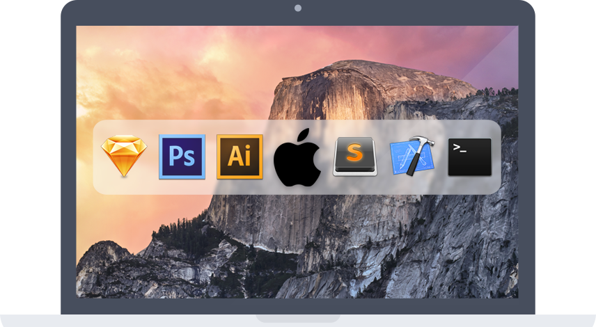

These ventures are definitely an undertaking involving uncertainty, but that's what I love about ventures. I enjoy coming up with solutions to problems that can be solved with design and technology. Steve Jobs said, "We're here to put a dent in the universe." I try to make dents with ventures.
